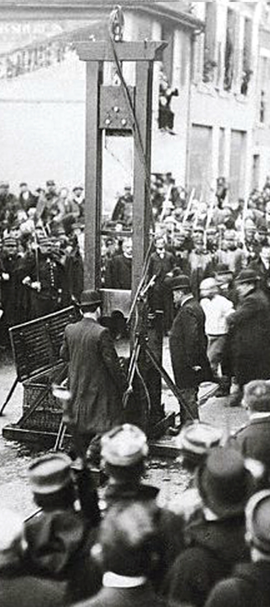
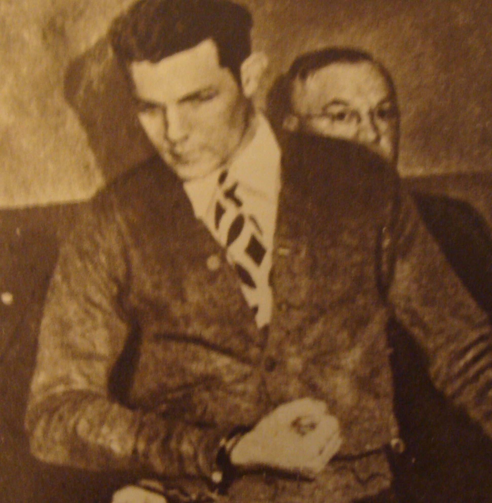
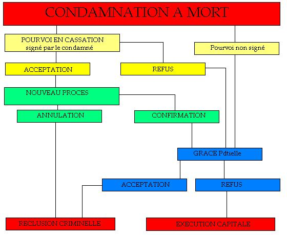
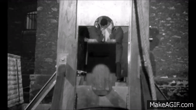

Post-condamnation : les Palmarès des exécutions capitales

Une exécution à Valence, 1909 Mai 2013 : l'abolition approche de son 32e anniversaire, et la majorité des gens ignorent tout de ce passé si proche, où la justice réglait le cas de certains criminels dans le sang.Proche ? Oui, car c'est en 1977 à Marseille que pour la dernière fois de l'histoire, la guillotine servit à exécuter un condamné à mort.
Le dernier d'une longue, longue liste que les exécuteurs surnommaient leur "palmarès".
Une longue liste. Ou plutôt plusieurs. Car la guillotine n'a pas uniquement servi en France : les actuels DOM-TOM, les anciennes colonies d'Asie et d'Afrique, y compris le Maghreb, des pays voisins comme la Belgique ou la Suisse, et d'autres encore, tous ont adopté à un moment ou à un autre la Veuve comme méthode d'exécution des condamnés à mort.
Ces listes, les voici : elles sont loin d'être exhaustives, car le sujet est vaste et le temps manque.
FRANCE MÉTROPOLITAINE
Résumé des exécutions départementales.
Exécutions (1792-1803)
Exécutions (1804-1832)
Exécutions (1833-1870)
Exécutions (1871-1977)
FRANCE MÉTROPOLITAINE SOUS OCCUPATION ÉTRANGÈRE
Exécutions en Alsace-Lorraine (1870-1918).
Exécutions en Savoie (1815-1860).
D.O.M./T.O.M.
Exécutions en Amérique (Antilles, Saint-Pierre-et-Miquelon)
Exécutions en Guyane
Exécutions dans le Pacifique (Nouvelle-Calédonie et Polynésie)
Exécutions à la Réunion
ANCIENNES COLONIES
Exécutions en Afrique Équatoriale et Occidentale
Exécutions en Asie (Indochine, Cochinchine, Tonkin, Annam, Inde)
Exécutions au Maghreb
AUTRES PAYS
Exécutions en Belgique
Exécutions au Luxembourg
Exécutions dans le Monde
Exécutions en Suède (1866-1910)
Exécutions en Suisse
MISC
Anecdotes d'exécutions capitales et derniers mots
Photographies d'exécutions capitales
L'AFFAIRE MICHEL
DU CRIME A L'EXÉCUTION
DU CRIME A L'EXÉCUTION

Paul Michel L'histoire qui suit n'est pas authentique mais permet de se faire une idée du déroulement d'une affaire s'achevant par une exécution capitale.C'est le 18 décembre 1946 que la vie de Paul Michel va changer du tout au tout.
Né le 05 juin 1922 à Paris, benjamin d'une fratrie de quatre, enfant peu enclin aux études, il "tourne mal" et devient souteneur et malfrat sans envergure juste avant la guerre, ce qui lui vaut de faire deux courts séjours en prison, puis participant à de nombreux larcins sans importance sous l'Occupation. La chance fit qu'il échappa toujours de justesse aux polices françaises et allemandes.
Mais cette chance va tourner. A l'été 1946, il se ligue avec un bandit dangereux, Nicolas Perrot, 31 ans, un braqueur de banque condamné à perpétuité en 1938 pour meurtre d'un convoyeur de fonds et évadé de la centrale de Caen en 1940. Les deux hommes sympathisent et Perrot entraîne son jeune collègue vers des actes plus graves que ceux qu'il a commis jusqu'alors.
Le 18 décembre 1946, donc, les deux hommes arrivent rue de la Paix au volant d'une traction avant Citroën volée le matin-même par Perrot et entrent en plein après-midi dans la bijouterie d'Alphonse Lemarquet, rue de la Paix, à Paris. Une arme à la main chacun, ils menacent le commerçant et se font remettre argent liquide et joyaux. Mais Lemarquet s'énerve face aux braqueurs, et Perrot lui tire dessus. Touché au niveau de l'épaule droite, le bijoutier tombe au sol et les deux hommes s'enfuient sans vérifier s'il est mort ou blessé.
Pas question de rester ensemble : Perrot conduit son acolyte à la gare Montparnasse et lui conseille de "se mettre au vert" pendant quelque temps avec une partie du butin. La moindre : l'argent dérobé dans la caisse.
Michel, passablement traumatisé par l'expérience, achète donc un billet pour Bayonne, où il sait que l'une de ses soeurs aînées est partie vivre après son mariage. Il compte se faire offrir le gîte et le couvert.
Un peu surprise par son arrivée impromptue, le 19 décembre, Suzanne Michel, épouse Lacarre, 30 ans, accueille sans discuter son petit frère. Mais Daniel Lacarre, son époux, 33 ans, voit la visite d'un mauvais oeil et en fait part discrètement à sa femme. Celle-ci connaît le bon sens de son époux, mais Noël approche, et elle ne veut pas gâcher ce moment par des suspicions douteuses.
Cependant, le 22 décembre, Nicolas Perrot, identifié par le bijoutier Lemarquet, gravement blessé mais vivant et en voie de guérison, est arrêté dans le quartier de Ménilmontant. Il résiste une journée aux interrogatoires, puis lassé, et sachant qu'il ne risque pas plus que la perpétuité à laquelle on l'a déjà condamné, il finit par tout avouer, et c'est sans hésitation qu'il dénonce son complice.
Les policiers enquêtent sur ce garçon : lors de ses deux condamnations, ils ont pu faire un dossier sur l'individu, et connaissent tout de sa famille... y compris l'existence de sa soeur Suzanne domiciliée dans les Basses-Pyrénées depuis 1937. Or, Perrot n'a-t-il lâché son complice gare Montparnasse ? C'est bien là la gare pour accéder au pays Basque !
Le 24 décembre au petit matin, on frappe à la porte des Lacarre, et Paul Michel bondit hors de son lit comme un fou. Voilà près d'une semaine qu'il dort mal, en songeant à l'attaque à main armée. Il n'a pas tiré, mais il est complice, et passible de la même peine que Perrot ! Et personne ne rend de visite de courtoisie à l'aube... Il n'y a que la police qui vient aussi tôt !
{kind=link}
Or, Paul a remarqué les suspicions de son beau-frère, et cela ne lui a pas plu. Se pourrait-il que ce salaud qui ne l'a jamais aimé soit allé le dénoncer à la police ? Il entend des voix, celle de Daniel, celle de Suzanne, celle d'hommes inconnus, il lui semble en entendre deux ou trois... Ils se dirigent vers sa chambre. Pris de peur, furieux, Michel s'empare du revolver encore chargé qu'il a gardé dans son manteau depuis le braquage... et quand la porte s'ouvre, il hurle : "Traîtres ! Salauds ! Vous m'avez donné aux flics ! " puis tire sans réfléchir, vidant le chargeur. Des cris, des râles, et on l'entoure, on le ceinture, on le frappe, on le désarme...
Ce jour-là, veille de Noël, Paul Michel est devenu un double meurtrier : le brigadier Etienne Coarraze, de la gendarmerie de Bayonne, n'a pas survécu aux deux balles qu'il a reçues dans la poitrine. Quand à Suzanne, elle a pris un troisième projectile en plein front. C'est elle qui avait tenu à ouvrir la porte pour réveiller calmement son petit frère pour ne pas qu'il aie trop peur. Comme autrefois. Les mois s'écoulent. Paul n'a pas regagné la capitale : la justice a décidé qu'il était inutile de perdre du temps à le ramener à Paris pour répondre d'une complicité dans un vol à main armée quand il est accusé d'un double meurtre à l'autre bout de la France. On s'est contenté, en mai, de le ramener à Pau en attente de son procès.
Paul Michel n'est pas un salaud au fond, mais un pauvre type. Il pleure à longueur de temps, il pleure sur sa soeur disparue, sur sa propre bêtise, sur cette panique qui l'a poussé à tuer par deux fois. Le 05 juin 1947, il apprend que son complice Perrot a comparu devant les assises de la Seine et a écopé la veille de vingt ans de travaux forcés pour l'attaque de la rue de la Paix. Vingt ans ! Peine symbolique, au fond, puisqu'il a déjà pris perpet'. Les peines vont se confondre. C'est son avocat, Me Henri Janaillac, commis d'office, qui le lui a dit. Michel a demandé alors à son défenseur ce qu'il aurait risqué. L'avocat a soupiré : "Avec vos antécédents, vu la peine à laquelle ils ont condamné Perrot ? Dix ans, au maximum."
Voilà. C'est pour échapper aux dix ans de prison que Paul Michel a tué sa soeur et un policier. Son cas à lui est autrement plus grave. Il le sait.
Lundi 18 août 1947, Paul Michel comparaît devant les assises des Basses-Pyrénées. Un procès qu'on sait d'avance court. Au soir, il connaîtra déjà le verdict.
Le président Jeannin rappelle ses antécédents, ses vols, sa rouerie. Il a l'impression qu'on parle de quelqu'un d'autre : est-il vraiment ce criminel, ce monstre dont on dépeint le portrait ? Le docteur Bouvet, psychiatre, assure qu'il est parfaitement responsable de ses actes, et les jurés prennent note. Ils sont neuf à décider, à le regarder avec un peu de mépris. Il fut un temps où Paul aurait réagi, où il aurait menacé. Mais plus là. Impressionné par le cérémonial de la justice, il se contente d'écouter comme s'il n'était plus vraiment présent.
Les témoignages se succèdent : on lit les informations fournies par Perrot lors de l'instruction et du procès parisien. Pas spécialement incriminantes, mais pas disculpantes non plus, puisqu'il apparaît très clairement que Paul Michel a accepté de l'aider dans ce braquage sans avoir besoin d'insister. Puis c'est au tour des gendarmes qui l'ont arrêté, désormais convaincus de sa dangerosité. Un tueur de gendarmes n'est pas vraiment de ceux qui inspirent le pardon... Puis c'est le tour de la famille, son frère René, sa soeur Bénédicte, horrifiés, ne sachant plus qui plaindre : leur lamentable petit frère à l'avenir bien sombre, ou bien leur soeur aimée et disparue. Son père est un homme brisé : il a éduqué ses enfants correctement, Paul n'a ni été plus choyé ni moins aimé que les autres ? Pourquoi cette dérive ? La mère, elle, n'a pas eu la force de venir assister au procès. Le pire, c'est quand Daniel Lacarre vient déposer. Il est en larmes, mais digne. Il n'insulte pas son beau-frère, il le regarde et lui pose une seule question : "Pourquoi elle ?" Paul Michel s'effondre à son tour. Il le hurle : jamais il n'a voulu tuer Suzanne !
Une pause pour le déjeuner, et la parole est donnée à Me Souquet, représentant la partie civile, qui se montre particulièrement sévère et demande en réparation une peine d'exemplarité. L'avocat général Richet en profite : oui, Michel a agi dans la précipitation du moment, dans la peur, c'est le geste d'un homme aux abois, mais cette situation, il s'y est mis seul, en acceptant l'association de malfaiteurs, le braquage de la rue de la Paix, en ne prêtant pas secours au blessé, en s'enfuyant avec une partie du butin. Et puis, ce 24 décembre, il n'a même pas attendu de voir qui entrait dans la chambre pour tirer. Il attendait, l'arme en main, prêt à tuer. Il y a préméditation. Il allait faire usage de son arme. Daniel Lacarre aurait pu mourir ce matin-là... ou même son neveu, le petit Julien, désormais privé de sa mère. L'avocat général conclut ainsi :
"On a vu en ces lieux des assassins plus fourbes, plus sournois que Paul Michel, sans doute. Mais cela n'atténue en rien la culpabilité de cet homme qui a tiré au jugé pour échapper au châtiment. Pour cet homme qui a fait de quatre enfants - dont son propre neveu - des orphelins, pour cet homme qui a tué un représentant de l'ordre dans l'exercice de ses fonctions, pour cet homme qui a abattu sa propre soeur après que celle-ci, aimante et dévouée, l'ait accepté sous son toit, je ne puis réclamer que la peine de mort."
Me Janaillac se lève. Vieil habitué du prétoire béarnais, il a déjà eu à défendre des cas graves, et à combattre la peine de mort. Mais à son avis, la justice fait fausse route en accablant Paul Michel. Dangereux, oui, mais au point de devoir le retrancher de la société de cette façon ? Son crime est inexcusable, mais l'homme ne l'est-il pas ? Un petit truand qui n'avait jamais eu de sang sur les mains auparavant, et qui agit par peur, par effroi, démesurément ? Veut-on vraiment qu'un matin prochain, la guillotine vienne à Pau, alors que nul condamné n'a été exécuté dans la préfecture depuis plus de cinquante-cinq ans ?
L'avocat plaide pendant une heure. Juste ce qu'il faut pour ne pas lasser les jurés. Puis le président Jeannin donne une dernière fois la parole à Paul Michel.
"Je suis un misérable. Pardon."
Il faudra trente-cinq minutes aux jurés pour rendre leur verdict. Me Janaillac blêmit en voyant les jurés rentrer, le visage baissé, et le président coiffer sa toque pour lire les réponses.
A toutes les questions, il est répondu "Oui" à la majorité de huit voix au moins. A la mention "Existe-t-il des circonstances atténuantes en faveur de l'accusé ?", il est répondu "Non".
Les juges se retirent cinq minutes, puis reviennent. Le président fait un signe, et Paul Michel, encadrés par deux gendarmes, reparaît dans la salle d'audience. Il est 17 heures 15. Il lui est à nouveau fait lecture de la décision du jury, puis de l'arrêt de condamnation.
La Cour.
{kind=link}
Vu la déclaration du jury portant que Paul Francis Michel est coupable d'avoir à Bayonne, le 24 décembre 1946, volontairement donné la mort à Etienne Coarraze, brigadier de gendarmerie, et à Suzanne Michel, épouse Lacarre, lesdits homicides volontaires ayant été commis avec préméditation ;
Ouï le ministère public en ses conclusions ;
Ouï le conseil de l'accusé et l'accusé lui-même qui a eu la parole le dernier ;
Vu les articles 295, 296, 297 et 302 du Code pénal qui sont ainsi conçus :
Vu les articles 12, 26, 36 du Code pénal et 368 du Code d'instruction criminelle qui sont ainsi conçus :
Art. 295. - L'homicide commis volontairement est qualifié " meurtre ".
Art. 296. - Tout meurtre commis avec préméditation ou guet-apens est qualifié " assassinat ".
Art.297. - La préméditation consiste dans le dessein formé, avant l'action, d'attenter à la personne d'un individu déterminé, ou même de celui qui sera trouvé ou rencontré, quand même ce dessein serait dépendant de quelque circonstance ou de quelque condition.
Art.302. - Tout coupable d'assassinat, de parricide ou d'empoisonnement sera puni de mort, sans préjudice de la disposition particulière contenue en l'article 13 relativement au parricide.
Art.12. - Tout condamné à mort aura la tête tranchée.
Art.26. - L'exécution se fera sur une des places publiques du lieu qui sera indiqué par l'arrêt de condamnation.
Art.36. - Tous arrêts qui porteront la peine de mort, des travaux forcés à perpétuité et à temps, la déportation, la détention, la réclusion, la dégradation civique et le bannissement seront imprimés par extraits. Ils seront affichés dans la ville centrale du département, dans celle où l'arrêt aura été rendu, dans la commune du lieu où le délit aura été commis, dans celle où se fera l'exécution, et dans celle du domicile du condamné.
Décret-loi du 24 juin 1939 : L'article 26 du Code Pénal est modifié ainsi qu'il suit : L’exécution se fera dans l’enceinte de l'établissement pénitentiaire qui sera désigné par l’arrêt de condamnation et figurant sur une liste dressée par arrêté du garde des sceaux, ministre de la justice.
Seront seules admises à assister à l’exécution les personnes indiquées ci-après :
1° Le président de la cour d’assises ou, à défaut, un magistrat désigné par le premier président ;
2° L’officier du ministère public désigné par le procureur général ;
3° Un juge du tribunal du lieu d’exécution ;
4° Le greffier de la cour d’assises ou, à défaut, un greffier du tribunal du lieu d’exécution ;
5° Les défenseurs du condamné ;
6° Un ministre du culte :
7° Le directeur de l'établissement pénitentiaire ;
8° Le commissaire de police et, s’il y a lieu, les agents de la force publique requis par le procureur général ou par le procureur de la République ;
9° Le médecin de la prison ou, à son défaut, un médecin désigné par le procureur de la République.
Art.368 du Code d'instruction criminelle. - L'accusé ou la partie civile qui succombera sera condamné aux frais envers l'Etat et envers l'autre partie.
En exécution de ces dispositions de la loi, la Cour et le Jury, après en avoir délibéré en chambre du conseil et voté conformément à la loi et à la majorité absolue :
Condamnent Michel Paul Francis à la peine de mort ;
Ordonnent que l'exécution aura lieu dans la maison d'arrêt, de justice et de correction de Pau conformément à l'article 1er de l'arrêté ministériel du 6 juillet 1939 ;
Ordonnent que le présent arrêt sera imprimé par extraits, affiché dans les lieux indiqués par la loi et exécuté à la diligence de Monsieur le Procureur de la République.
Le condamne aux frais envers l'Etat liquidés à onze mille trois cent quarante-six francs.
Puis le président s'adresse directement à Michel :
"Michel, vous avez trois jours francs pour vous pourvoir en cassation contre l'arrêt. Passé ce délai, vous ne serez plus recevable à le faire."
Puis, aux gendarmes :
"Qu'on emmène le condamné."

Au soir du 18 août 1947, c'est donc un condamné à mort qui franchit les portes de la maison d'arrêt de Pau. Au greffe, on le fait se déshabiller pour enfiler un droguet, ce costume de bure gris-brun, qui se boutonne le long des jambes. On récupére ses effets personnels, on les énumère, on les range : une grâce est possible, l'Administration pénitentaire ne tient pas à ce qu'on lui reproche un vol en cas de libération future d'un ex-condamné à mort. Dans les couloirs qui le mènent à sa cellule, les détenus font face au mur. Ils n'ont pas le droit de regarder le condamné à mort. Ceux qui enfreignent le règlement sont bons pour une semaine de cachot.
C'est une cellule unique, pas très vaste, et séparée en deux : d'un côté, c'est la "cage" du condamné, de l'autre, l'office du gardien, car le condamné doit être surveillé de nuit comme de jour. Côté condamné, l'ameublement est presque inexistant : un lit scellé au mur, des toilettes à la turque dans un angle, avec une tinette, un petit "robinet" d'eau potable qui va servir à boire et à se laver sommairement. Un tabouret fixé au sol et une tablette de béton permettent de faire face à la "loge" du gardien. De son côté, le maton dispose d'une table, d'une chaise, d'une armoire qui sert à enfermer les effets personnels du condamnés, tels que cigarettes, papiers, crayons, photos... La lumière y est allumée en permanence. Michel, comme les autres avant lui, va vite s'en accommoder, en cachant son visage contre le mur tant pour dormir que pour pleurer... Mais il est difficile de trouver le sommeil, même impossible, avec les menottes qui enserrent les poignets la nuit. Puis au fil des jours, on dort de moins en moins bien... On craint de rater les signes d'une visite à l'aube, une visite des moins réjouissantes, inévitablement. C'est l'attente qui devient insupportable... Cette attente sans savoir ce qui va se passer au bout du compte : la vie ou la mort ? Et c'est une routine qui s'installe, une routine préparée administrativement, comme le rappelle ce document de 1949 qui ne fait que compiler des habitudes déjà décennales concernant les condamnés à mort.
Circulaire du 09 mars 1949
Le régime des condamnés à mort
ARTICLE PREMIER :
Le présent règlement a pour objet d'établir un régime uniforme pour les détenus contre lesquels une condamnation à la peine capitale a été prononcée. Il ne fait cependant pas obstacle à ce qu'il soit rendu compte, sous couvert du Directeur de la Circonscription à l'Administration Centale, sous le timbre du Bureau de l'Application des Peines, de toutes circonstances particulières qui paraîtraient de nature à justifier certaines dérogations aux dispositions qu'il édicte.
Art.2 :
S'il ne s'y trouve pas détenu au moment de son jugement, le condamné à mort est transféré dès que possible à l'établissement pénitentiaire désignément conformément aux prescriptions de l'article 26 du Code Pénal. Aucune autre destination ne doit lui être donnée, sans instructions expresses du Ministre de la Justice.
Art.3 :
Le condamné à mort est soumis à l'emprisonnement individuel, à moins que le nombre de condamnés à mort détenus dans l'établissement n'oblige de façon absolue à les réunir. Il est placé dans une cellule spéciale, particulièrement sûre et dont on peut voir l'intérieur d'une pièce voisine par une ouverture grillagée. Il est soumis à une surveillance de jour et de nuit afin d'être mis dans l'impossibilité de tenter soit une évasion, soit un suicide. Un surveillant, relevé toutes les six à huit heures, prend place à cet effet dans la pièce voisine de sa cellule , et grâce au dispositif précedemment indiqué peut l'observer constamment. Il reçoit quotidiennement la visite du surveillant-chef ou d'un gradé. Le chef d'établissement devra s'assurer fréquemment que les consignes sont bien observées et notamment que la fouille complète de la cellule et le sondage des barreaux sont effectués chaque jour.
Art.4 :
Le condamné est astreint, pendant le jour, au port des entraves, et pendant la nuit, au port des entraves et des menottes, mais on doit veiller à ce que les fers ne le blessent pas. Il est revêtu du costume pénal fourni par l'Administration et porte des chaussons. Il dispose dans sa cellule d'un lit, si possible métallique et scellé au mur, d'un matelas, d'un nombre suffisant de couvertures, et d'un tabouret retenu au sol. Il n'est laissé en possession d'aucun effet personnel, sauf de son alliance et, sur sa demande, de quelques photographies de famille.
Art.5 :
Le condamné est exempt de tout travail et ne saurait en demander. Il peut lire sans restrictions les ouvrages de la bibliothèque de l'établissement, qui, sur sa demande, lui sont fournis séparement par l'agent préposé à sa garde. Il peut fumer sans limitation.
Art.6 :
Le condamné bénéficie d'une heure de promenade par jour dans la cour de l'établissement. Il porte seulement les menottes et est accompagné d'au moins deux agents qui l'encadrent pour prévenir toute tentative désespérée de sa part : il est alors chaussé de sabots. Il est conduit aux douches une fois par semaine et est rasé régulièrement par le coiffeur de la prison en présence d'un surveillant. Il reçoit deux fois par semaine la visite du médecin de l'établissement.
Art.7 :
Le condamné perçoit, s'il le demande, outre les vivres réglementaires, une pitance supplémentaire. Il a la faculté de se faire acheter en cantine, sur son pécule, les denrées qui y sont vendues ainsi que du tabac. Il ne doit par contre recevoir aucun colis du dehors, ni de linge, ni de vivres, ni de médicaments, ni de livres.
Art.8 :
Le condamné peut écrire lorsqu'il le désire ; l'agent préposé à sa garde lui remet le papier et les fournitures nécessaires. Les lettres qu'il adresse à son avocat et celles qu'il en reçoit parviennent à destinations sans être lues ; les autres sont soumises aux formalités normales de contrôle et de visa, et leur nombre peut être limité.
Art.9 :
Sur autorisation délivrée par l'autorité administrative, et visée par un magistrat du parquet compétent, le condamné est susceptible d'être visité par ses plus proches parents. Les visites ont lieu en présence d'un surveillant, et dans un parloir spécial comportant au moins une grille de séparation entre les interlocuteurs. Elles ne doivent pas s'effectuer aux heures prévues pour les visites des autres détenus.
Art.10 :
Le condamné reçoit dans sa cellule les vistes de son avocat et de l'aumonier de son culte, ainsi que de l'assistante sociale contractuelle affectée à l'établissement. Un gradé assiste aux entretiens, mais s'éloigne suffisamment pour ne pouvoir entendre une conversation échangée à voix basse.
Art.11 :
Le condamné est soumis au régime défini ci-dessus du jour de sa condamnation à mort au jour de la signification de la cassation de l'arrêt, de la notification de sa grâce ou de son exécution. Toutes précautions doivent être prises pour qu'aucune modification de ce régime ne vienne avertir l'intéressé du rejet éventuel de son pourvoi en cassation.
Art.12 :
Lorsqu'un détenu est placé au régime des condamnés à mort, ou cesse d'être soumis à ce régime conformément aux dispositions de l'alinéa I de l'article précédent, il en est immédiatement rendu compte à la Direction de l'Administration pénitentiaire (Bureau de l'Application des Peines), sous couvert du directeur de Circonscription. Il est également rendu compte de tout incident concernant les condamnés de cette catégorie.
Dès le lendemain de sa condamnation, premières visites pour Michel : l'aumônier Germain, d'abord, puis Me Janaillac, avec le pourvoi en cassation. Au prêtre, Michel n'a rien à dire. Jamais il n'a été croyant, ce n'est pas la peine de parler religion, cependant, si l'homme d'Eglise accepte de devenir en toute amitié, en toute pitié, lui rendre visite, il aura plaisir à discuter. Le père Germain est un prêtre d'une quarantaine d'années, un ancien maquisard, toujours sur sa motocyclette. Prêtre de son temps, il accepte volontiers.
Le pourvoi en cassation est un document administratif, préalablement rempli par l'avocat. Michel n'a qu'à y poser sa signature. Le lire ? Pourquoi faire ? C'est du jargon juridique auquel il ne comprend pas grand-chose. Si cela peut lui sauver la vie, en entraînant un nouveau procès où cette fois, on le condamne aux travaux forcés à perpétuité, cela lui suffit.
Deux mois plus tard, la Cour de cassation rend sa décision :
"COURS D'ASSISES - CONDAMNATION A LA PEINE DE MORT - CONTRAINTE PAR CORPS - CONTRADICTION ENTRE LA FEUILLE DE QUESTIONS QUI ORDONNE LA CONTRAINTE ET L'ARRET QUI NE LA PRONONCE PAS - ABSENCE DE GRIEF.
{kind=link}
Un condamné à la peine de mort ne saurait se faire un grief de la contradiction existant entre la feuille de questions qui mentionne que la Cour et le Jury ont ordonné la contrainte par corps et l'arrêt de condamnation qui ne la prononce pas, une telle contradiction ne pouvant lui porter préjudice.
REJET du pourvoi formé par Michel (Paul) contre un arrêt de la cour d'assises des Basses-Pyrénées du 18 août 1947 qui l'a condamné à la peine de mort ainsi qu'à des réparations civiles pour meurtres et vol qualifié.
Du 23 octobre 1947 (M.BATTESTINI, président.)
La Cour,
Oui M. le conseiller Patin, en son rapport, Mes Morillot et Copper-Royer, avocats en la Cour, en leurs observations et M. Laurens, avocat général, en ses conclusions ;
Vu le mémoire produit ;
Sur le moyen unique de cassation, pris de la violation par fausse application de l'article 52 du Code Pénal et de la loi du 22 juillet 1867, modifiée par celle du 30 décembre 1928, par manque de base légale, en ce que l'arrêt attaqué a prononcé la contrainte par corps à l'égard d'un condamné à mort ;
Attendu que, s'il est vrai que la feuille des questions porte la mention signée du président des assises et du premier juré constatant que la cour et le jury, après en avoir délibéré, condamnent Michel à la peine de mort, le condamnent aux frais de la procédure et fixent la durée de la contrainte par corps au minimum prévu par la loi, l'arrêt attaqué ne contient aucune disposition relative à l'exercice de la contrainte par corps à l'encontre de Michel ;
Que le demandeur ne saurait se faire un grief de cette contradction, qui ne peut lui porter préjudice, l'arrêt attaqué ne prononçant contre lui aucune condamnation à la contrainte par corps ;
Qu'ainsi, le moyen ne saurait être accueilli ;
Et attendu que la procédure est régulière et que la peine a été légalement appliquée aux faits déclarés constants par la Cour et le jury ;
REJETTE le pourvoi."
Evidemment, quand Me Janaillac apprend la nouvelle le 24 octobre, il se garde bien de l'apprendre à Paul Michel. Car cela signifie qu'entre lui et la guillotine, il ne reste qu'une seule et unique décision : la grâce présidentielle. Mais cela passe d'abord par une procédure administrative assez longue et relativement complexe.
Sitôt après le verdict, les jurés ont signé le recours en grâce. Une façon de se dédouaner, peut-être, de considérer que l'individu n'est pas totalement irrécupérable, inamendable ? Ils ont signé un document mentionnant les informations d'identité du condamné et les crimes pour lesquels on l'a jugé, lequel papier est venu s'adjoindre à un dossier constitué de rapports rédigés par le président Jeannin et ses assesseurs et l'avocat général Richet. Des avis sur l'opportunité d'accorder la clémence au condamné... Le procureur général y a joint lui aussi son avis, de même que Me Janaillac.
Ce dossier a alors été transmis à la Chancellerie, pour y être soumis à la diligence du bureau des Grâces pour examiner le tout. Après cela, c'est toujours le même rituel : les cinq directeurs du Ministère de la Justice vont être sollicités pour donner leur avis, de même que le directeur de cabinet du Ministre et le Garde des Sceaux en personne. L'ensemble des documents sera ensuite transmis au Conseil Supérieur de la Magistrature, où sept personnes vont l'étudier : parmi eux, cinq magistrats aux ordres d'un vice-président, le Garde des Sceaux, et d'un président... Le président de la République. Après rédaction d'un rapport par l'un des magistrats, une réunion sera organisée au palais de l'Elysée. Chacun est tenu d'y formuler son avis oralement. Ce ne sera qu'à ce moment-là que, suivant la coutume, le chef de l'Etat fera convoquer en un entretien exceptionnel l'avocat de la défense avant de prendre sa décision.
C'est le 11 mars qu'une lettre arrive au cabinet de Me Janaillac, le priant de se présenter le lundi suivant, 15 mars à 16 heures, au palais de l'Elysée à Paris. C'est un moment impressionnant. Me Janaillac n'a jamais rencontré Me Auriol, ce confrère voué aux plus hautes fonctions de la République. Il passe les jours suivants à préparer sa petite valise, son dossier, à sélectionner les mots qu'il va dire. Hébergé chez un collègue parisien qui a déjà eu l'opportunité de rencontrer le président en pareilles circonstances, il n'y reçoit pas d'excellentes nouvelles :
"Il est brave et il t'écoute, mais cela dépend de son humeur. Ce n'est pas Grévy, qui graciait à tour de bras... Lui, je dirais que c'est une chance sur deux... Pardonne ma franchise, mais surtout ne remets pas tes talents en question."
Le lendemain, vingt minutes avant l'heure dite, Me Janaillac fait son entrée dans le palais présidentiel. Il est guidé jusqu'à une salle d'attente, puis à quatre heures sonnantes, un huissier vient le chercher pour le conduire dans un cabinet au second étage. Derrière un bureau, l'air bonhomme, aimable, Vincent Auriol.
"Asseyez-vous, maître. Je vous écoute."
Alors, pendant plus d'une demi-heure, l'avocat palois parle de son client, de ses remords. Il plaide son dossier avec brio, comme devant une cour d'assises, mais une version expurgée, réduite, la version de la dernière chance. Vincent Auriol écoute attentivement, hoche la tête. Mais au terme de l'entretien, il ne laisse rien paraître. Il se contente de dire, de son accent si proche de celui du défenseur : "Vous avez toute ma sympathie, Maître." Et pour Me Janaillac, cette parole de soutien a un arrière-goût particulièrement amer... On dirait clairement que la phrase n'est pas achevée : "Vous avez toute ma sympathie, Maître... mais je ne gracierai pas votre client."
Quelques minutes après le départ de l'avocat, Vincent Auriol reçoit sur son bureau deux papiers. Il ne les connaît que trop bien.
{kind=link}
Le premier est évidemment la grâce, le second, l'ordre d'exécution capitale. Me Auriol réflechit : la décision ne se fait jamais à la légère. L'ancien avocat qu'il est ne l'ignore pas... Mais à côté de cela, les criminels ces dernières années sont devenus particulièrement vils et le peuple de France réclame justice. Alors, après avoir pris une respiration, en son âme et conscience, le président date et signe le document qui précise : "DÉCIDE de laisser la justice suivre son cours."
Le vendredi 23 avril au soir, Me Janaillac revient du Palais de Justice. C'est une belle journée de printemps, mais ce n'est pas pour cela qu'il rentre chez lui à pied. Vers 14 heures, il était en train de discuter avec deux confrères quand un petit homme aux cheveux blancs, vêtu de sombre, est entré dans le tribunal pour demander le chemin du Parquet. Un silence s'est fait, et Me Albert, l'un des amis de Me Janaillac, lui a tapé sur l'épaule : "Mon pauvre vieux !"
Me Janaillac ne l'avait jamais rencontré, bien sûr, mais il avait reconnu l'homme. Ce petit vieux d'allure tranquille, c'était M. Desfourneaux, le bourreau, venu prendre ses ordres auprès du Procureur... Ainsi, tout était fini ! Le mot avait déjà filtré dans le palais de justice. Deux jours plus tôt, la guillotine avait fait étape à Auch, puis ce matin-même, elle avait décapité le dernier des trois Espagnols condamnés à mort à Tarbes... Les deux complices avaient été exécutés fin janvier... On craignait de la voir, la machine de mort, à Pau, à ce moment-là... Mais ce n'était pas pour cette fois.
{kind=link}
D'instinct, l'avocat aurait voulu bondir à la prison, prévenir son client... Mais à quoi bon faire durer l'agonie ? Comment le prendrait-il ? Avec résignation ? Avec rage, faisant de ses dernières heures un long combat ? Mieux vaut se taire et attendre...
Me Janaillac voit alors ce policier en tenue à l'entrée de son domicile. Il a l'air grave, et un papier à la main. L'avocat prend, balbutie un remerciement inaudible, puis rentre chez lui. Son épouse l'accueille, souriante. Son visage se fige devant l'air bouleversé de son mari. Elle voit le papier, le prend, le déplie. Elle le prend dans ses bras. La nuit va être blanche, ils le savent.
M.Desfourneaux, lui, a été informé de ce déplacement voici environ une semaine. Le vendredi 16, convoqué par télégramme place Vendôme, il a reçu les ordres de mission... Il en a reçu sept : un déplacement de sept jours qui va le faire passer par le Gers, les Hautes-Pyrénées, les Basses-Pyrénées et le Gard. Sept exécutions, respectivement fixées au 21, 23, 24 et 27 avril. Depuis un an, c'est devenu récurrent. La recrudescence des procès capitaux a entraîné une hausse significative du nombre d'exécutions. Jamais par le passé il ne se rappelle avoir fait autant de voyages, sinon au lendemain de la Grande Guerre... Le voilà donc à Pau. Il se souvient de l'époque où il était l'assistant d'Anatole Deibler. Ce dernier n'avait eu l'occasion de découvrir le Béarn qu'à une seule et unique reprise, en 1894, et il n'était lui-même que l'adjoint de son père Louis. A l'époque, le supplice était effectué en public, à l'entrée de la maison d'arrêt, comme il fut de coutume jusqu'en 1939. Mais maintenant, le souci est moindre : la guillotine est dressée dans la cour d'honneur des maisons d'arrêt, avec un nombre limité de spectateurs, tous des gens de la profession, et sans craindre de scandale de la part d'un ivrogne ou bien d'un journaliste en mal de sensation. M.Desfourneaux a trouvé le séjour, cette fois, assez plaisant et tranquille, même si très occupé. N'ayant jamais mis les pieds à Pau, il lui a fallu se renseigner pour trouver un cheval à louer. Il a procédé à la chose dès son arrivée à Pau, vers 11 heures. L'expression d'effroi du commerçant quand il a compris à qui il avait affaire ! Puis, après un déjeuner rapide dans un restaurant proche de l'hôtel et de la gare, et une courte sieste dans la chambre, il est venu préparer le cérémonial auprès du procureur. L'entretien, en présence du maire, d'un commissaire de police et du président de la Cour d'assises, a duré une bonne heure. Après cela, il se rend à la maison d'arrêt afin d'observer la cour. Accompagné d'un gendarme, il se rend devant la haute porte bleue, puis devant la plus petite porte, cinq mètres à droit de l'autre, elle aussi peinte en bleue. Sortant son laissez-passer, l'exécuteur pénètre dans la cour de la prison et observe le sol. Celui-ci est goudronné, il semble de niveau : sous le regard curieux des gardiens, l'exécuteur analyse l'endroit. C'est sans problème : les bois seront montés à quatre mètres de la porte d'entrée du bâtiment. Tout ira très vite. Aussi discrètement qu'il était arrivé, le bourreau quitte la prison pour regagner son hôtel en espérant ne pas être trop harcelé par les journalistes, sans doute déjà au courant de son arrivée en ville.
Une heure du matin, le samedi 24 avril. Aucune des personnes concernées par l'exécution ne dort. Paul Michel n'arrive à fermer les yeux que vers trois heures. Ses gardiens ne sont pas tenus de dormir. Me Janaillac s'est allongé environ deux heures avant de se lever et d'écrire quelques lettres pour s'occuper l'esprit et passer le temps. Dans la cuisine, son épouse lui prépare du café noir. A deux heures, le réveil sonne dans les chambres d'hôtel des exécuteurs. En un quart d'heure, les voici prêts à partir. Le fourgon contenant les bois de justice démontés les attend à l'entrée de l'établissement. Au petit pas, dans les rues désertes, la carriole s'avance vers la maison d'arrêt dans laquelle elle rentre dans le plus grand silence.
{kind=link}
Il est trois heures quand Me Janaillac quitte son domicile. Au volant de sa petite voiture, il roule lentement, comme pour ralentir son arrivée à la maison d'arrêt. La voilà justement, avec ses hauts murs gris. Des cordons de policiers encerclent l'endroit, empêchant quiconque de flâner aux alentours de la prison. Me Janaillac s'arrête au niveau d'un barrage, baisse sa vitre, tend sa convocation. Le policier lit le document, le salue et fait signe de le laisser passer. L'avocat aurait-il vu un peu de gêne chez l'homme de loi ? Possible. Il se gare à proximité immédiate de l'entrée, descend de véhicule sans faire claquer la portière derrière lui, puis va frapper à la porte d'entrée, doucement. Un gardien lui ouvre, le reconnaît, s'efface. Janaillac voit alors la guillotine. Il l'imaginait ailleurs, montée dans l'angle le plus reculé de la prison, sur son échafaud de la Révolution. Mais non : posée à même le sol, stablisée avec des cales, tandis qu'autour, les exécuteurs continuent de s'affairer, donnant la dernière main à son montage presque achevé. Contournant la machine comme une chose répugnante, il s'engouffre dans le greffe et est conduit par un gardien vers le bureau du directeur. L'heure du réveil a été fixée à 4h30, celle de l'exécution à 5h. Il y a encore le temps. Dans l'office, il retrouve des visages connus. Le président des assises, l'avocat général, le commissaire de police. Uniquement des personnes au visage fatigué, gênées d'être là si tôt et pour une besogne aussi déplaisante. Le directeur a fait préparer du café, là encore. Me Janaillac en prend une tasse, qu'il ne boit qu'à moitié. Inutile d'être survolté pour aller annoncer au client qu'il a failli à son rôle de défenseur... Dehors, pas un bruit ou presque. On entend à peine la guillotine quand les exécuteurs la font fonctionner à vide, car on ne laisse pas tomber le couperet, on le garde maintenu par une corde. Celle-ci sera détachée du mouton quelques instants avant le supplice, pour tomber sans bavures sur la nuque de Paul Michel.
Les discussions ont lieu à voix basse, et Me Janaillac ne participe à aucune d'entre elles. Il ne pense qu'à son client. Sur l'horloge, les minutes s'égrènent. Puis à 4h25, le directeur donne le signal. Qui a donné le premier ce nom de "Messe Rouge" à la scène qui va se produire ? Dans les couloirs, les gardiens ont mis des tapis pour étouffer les bruits de pas. Eux-mêmes se sont déchaussés : l'un d'eux a enfilé des chaussons de feutre, les autres sont en chaussettes. Le cortège s'avance vers la cellule du condamné à mort. Les gardiens stoppent devant la porte, font signe aux officiels de ne plus avancer, pendant quelques instants du moins. L'un d'eux sort de sa poche une clé. Tout va alors très vite : la porte s'ouvre, les gardiens se ruent de part et d'autre du détenu, sans porter la main sur lui, car ils n'en ont plus le droit. Par le passé, c'était la coutume pour prévenir toute révolte d'un condamné agité. Mais maintenant, on se contente de porter la main sur un détenu trop violent, quitte à lui passer la camisole de force. Ca aussi, c'était presque le régime commun dans les années 1880... Paul Michel, qui dormait, se réveille en sursaut :
"Qu'est-ce qui se passe ?" fait-il en se redressant sur son lit.
Déjà l'avocat général Richet s'avance :
"Paul Michel, votre pourvoi en cassation a été rejeté, et votre recours en grâce refusé par le Président de la République. L'arrêt de condamnation va être mis à exécution. Ayez du courage."
Michel ouvre la bouche comme un poisson qui s'étouffe hors de l'eau. Ses yeux se mouillent de larmes, il renifle et murmure : "Je n'aurais pas pensé... je ne le voulais pas... c'est bien triste... mais s'il le faut..." Me Janaillac s'approche à son tour, s'asseoit aux côtés de Michel, pendant que les gardiens lui retirent les chaînes et les menottes.
"Mon garçon, je suis désolé... Vraiment désolé..." Alors Michel lui sourit : "Vous n'y êtes pour rien... C'est pas de votre faute, maître."
"Michel, dit encore Richet. Avez-vous quelque chose à dire, des révélations à faire ? Désirez-vous passer vos vêtements ?"
Le jeune homme acquiesce : "Oui, mes vêtements... Oui, je veux bien... Je peux pisser d'abord ?"
Sans attendre de réponse, il va vers les toilettes et urine. Il passe un peu d'eau de la tinette sur ses mains, sur son visage, passe la main dans ses cheveux coupés assez courts, puis s'habille sans dire un mot, prenant même le temps de nouer ses lacets. Les officiels le regardent faire en silence.
"On y va ?"
Il semble plus pressé que quiconque d'en finir. Calmement, sans entraves, sans soutien, il remonte le couloir de la prison, silencieux. Personne n'est dupe : tous les détenus sont réveillés, mais sauf dans le cas où l'homme qui va mourir le réclame, ils n'organisent jamais de charivari. Arrivés à mi-parcours, le père Germain se présente à Michel.
"Mon fils, vous avez toujours refusé les paroles divines. Mais à l'heure de votre fin, ne désirez-vous pas les secours de la religion pour vous aider à supporter ce moment ?"
A la grande surprise de l'assistance, Michel accepte. La messe est courte, moins de dix minutes, sans confession, s'achevant par la communion et l'absolution finale. Michel, à genoux, se soumet à cette cérémonie à laquelle il ne prête guère attention. En se relevant, il sourit légèrement et dit à Me Janaillac : "Au point où j'en suis... autant s'attirer les grâces du Bon Dieu."
Au greffe, il y a du monde qui attend : un employé de l'administration pénitentiaire fait signer à Michel sa levée d'écrou, puisqu'il doit mourir en homme libre. On ne peut confier de condamné au bourreau sans qu'il ait été au préalable libéré de prison.
{kind=link}
{kind=link}
"Voulez-vous écrire un mot ?" demande Richet, désignant une table sur laquelle on a placé du papier et un stylo.
Michel le regarde. "A qui ? Mes parents ? Mon frère, ma soeur ? Ils m'ont oublié, et c'est pour le mieux, sans doute. Maître ?
- Je suis là, Michel.
- Maître, dites-leur juste que je suis désolé."
Un gardien s'approche à son tour : dans l'une de ses mains, une tasse de café chaud, dans l'autre un paquet de cigarettes. Michel accepte l'un et l'autre, tout comme il demande qu'on lui verse quelques gouttes d'armagnac dans le café. La tradition veut que cela soit du rhum, mais selon les régions, cela peut être du cognac, de la fine. Il pose sa tasse, prend une cigarette, qu'on lui allume. C'est alors que les exécuteurs-adjoints se rapprochent : ils sont trois. Ils placent Paul Michel sur un tabouret et commençent la préparation, la "toilette" comme la presse le dit souvent. L'un d'eux, agenouillé, lui lie les chevilles serrées. Un autre noue dans son dos les poignets et les coudes, avec une manière précise qui permet de projeter le cou et la nuque... histoire de faciliter la tâche de la guillotine. Pendant ce temps, l'huissier lit l'arrêt de condamnation, et M.Desfourneaux va à son tour signer la levée d'écrou. Le premier adjoint, avec une paire de ciseaux à bouts ronds, découpe le col de la chemise blanche, découvrant les épaules. Un coup de tondeuse à main sur la nuque pour finir, pour éviter tout cheveu qui freinerait le couperet... Tous les officiels regardent le condamné, puis le directeur regarde l'horloge. Il est cinq heures et une minute. Desfourneaux et lui échangent un coup d'oeil. Un geste du bourreau et Paul Michel, solidement ficelé, est levé de son tabouret.

Un sanglot d'angoisse bien audible se fait entendre. Desfourneaux passe la porte le premier, et la guillotine apparaît à tous. Le regard de Paul Michel se fige sur la forme triangulaire de la lame. L'aumônier l'embrasse sur la joue, mais Michel ne ressent plus rien. Il crache le mégot qui pendait à ses lèvres. "La voilà..." gémit-il en franchissant la porte à tout petits pas, soutenu par les aides. Il est plaqué contre la planche verticale à bascule. Celle-ci pivote d'un quart de cercle et se retrouve, sous son poids, à l'horizontale. En un mouvement, grâce à un système de galets, les bourreaux la font rouler en position. La pomme d'Adam du condamné se place sur la partie inférieure de la lunette, un demi-cercle ressemblant aux piloris d'autrefois, la tête entre les deux montants. Un aide tient les jambes, l'autre a ses mains sur ses omoplates. De l'autre côté de la machine, le premier adjoint tourne le dos au portail de la prison et saisit la tête par les oreilles. A cet instant, très rapidement, Desfourneaux accomplit deux gestes. Une pression de la paume de la main gauche pour laisser tomber la lunette supérieure sur la nuque. Un mouvement sur le bec de cane de la main droite pour libérer le couperet. Sans bruit, le couperet s'abat, rebondissant sur les ressorts avec un certain fracas. Neuf secondes après avoir quitté son tabouret, Paul Michel est mort. En un seul mouvement des deux aides, son corps décapité est poussé sur le côté droit de la guillotine, dans un panier d'osier noir doublé de zinc et dont le fond est tapissé de sciure. La tête, elle, atterrit dans une bassine oblongue en zinc, ressemblant à une baignoire pour bébé. Le premier aide la ramasse et discrètement, la met à côté du corps dans le grand panier. Un bruit glougloutant vient de ce dernier : le corps se vide de son sang et du liquide céphalo-rachidien. Un médecin s'approche, ausculte le corps, déclare le décès et s'esquive pour remplir un permis d'inhumer. Les aides reprennent le panier, le hissent dans le fourgon. M.Desfourneaux se charge de surveiller l'inhumation. Avec un tuyau d'arrosage, les aides restés dans la cour nettoyent les parties basses de la guillotine, puis entament la procédure de démontage. Un gardien avec un balai pousse l'eau sale vers le caniveau, tandis que les officiels, tous plus ou moins marqués par l'épreuve, quittent la maison d'arrêt tour à tour. Un quart d'heure après le supplice, le greffier achève la rédaction du procès-verbal d'exécution, que le directeur de la prison signe avant de le remettre à l'avocat général, et d'en faire afficher une copie à la porte de la maison d'arrêt, informant le passant de l'exceptionnelle situation qui vient d'avoir lieu ce jour-là, ce pour une durée de vingt-quatre heures. Le greffier se doit de remplir cette tâche, sous peine d'amende.A six heures et quart, les fossoyeurs achèvent de reboucher le tombeau. Le corps de Paul Michel est enterré dans une allée retirée du cimetière de Pau, sans croix, sans symbole permettant d'identifier sa sépulture, une fosse qu'on appelle couramment le "carré des suppliciés". La Faculté de Médecine n'a pas daigné récupérer son corps à des fins scientifiques, pas plus que les Michel n'ont voulu de la dépouille pour la mettre dans le caveau de famille.
Le fourgon revient à la prison, et méthodiquement, les adjoints-exécuteurs rangent les pièces de la guillotine à l'intérieur. Quand sept heures sonnent, les bourreaux repartent vers la gare, direction Nîmes. Il ne reste plus aucune trace permettant de savoir l'évènement qui s'est déroulé à cet endroit précis deux heures plus tôt.
{kind=link}
{kind=link}
Pour une autre version d'une exécution capitale.